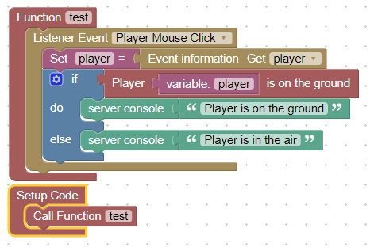

Player on Ground
When the block below a player is solid, they are considered on ground.
This code will output in the server console, whether they are on ground or not

To test this code, go into creative mode (/gamemode creative)
and go in the air by pressing the space bar twice quickly, and then once to float
then click the mouse and check the server console. You should see a message indicating that you are in the air
Next go to the ground by pressing the space bar twice, and click the mouse
You should see a message in the server console indicating that you are on the ground